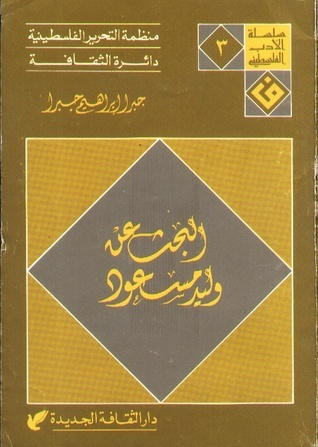

The book cover of the 1989 edition of In Search of Walid Masoud
This is part of the #100ArabNovels project, where I try to revisit the Arab Writers'Association's list of 100 most significant novels, as part of trying to understand the Arab imaginary post-2011
I first learned of Jabra Ibrahim Jabra (1920-1994)'s work, through his involvement with the Baghdad Modern Art Group (active during the early to late fifties) Jabra would play a significant role in the development of modern Iraqi art, whether by participating himself or writing extensively about it. Rarely do writers or critics get to occupy such variety of roles with such degree of distinction and accomplishment. Jabra was not just a critic and a writer but an artist, translator, novelist, historian and much more. A universal intellect of such scope and appetite. And here comes in, his crowning literary achievement, al-Bahth 3an Walid Masoud, In search of Walid Masoud (1978). Written sometime mid-career in the aftermath of the 1967 defeat and that desperate attempt to question and reflect. And that sense of desperation hangs over the novel, like an overcast of political failure and deep existentialist ennui.
There is definitely a lot of Jabra's own milieu that seeps through the narrative, and perhaps readers more familiar with the Iraqi cultural and artistic scene of the 1950s and 1960s would be able to identify specific persons and stories. Nonetheless, in his profound connection to the city of Baghdad and its people, it is fun to, for an Egyptian, to read characters that are also burdened by the history of their city and the land they live in. Images of the Euphrates as the parallel story of a timeless civilization, haunts the imagination of Baghdadis, the same way that the Nile as the cradle of civilization, haunts the imaginaries of Cairenes from birth till the death. It is a rootedness that is irresistible but also inevitable.
Jabra's Walid Masoud, was primarily praised as a breakthrough in the form and narrative structure of the Arab novel, Jabra's deviation is, however, misleading. The novel structured around twelve chapters, is supposed to convey the different voices of the people who knew the titular character, the elusive, sexy and absolutely irresistible Walid Masoud. A Christian Palestinian man, who settles in Iraq, very much like Jabra, in the aftermath of 1948 Nakba. As Jabra attempts to create a polyphonic text populated by voices that contrast and complement each other (using those very terms, repeatedly throughout his novel) yet all through the narrative, it feels as if his own voice, the author's voice, permeates sizable chunks of the novel. Not just voice, but his own moral, ethical and philosophical preoccupations. Preoccupations that can be summarized as the trials and tribulations of Arab intellectuals post-independence. Nearly all the male characters are trying to come to terms with the disappointing reality of the post-independence or rather the failure the Arab Nationalist project with varying amounts of whiskey, sex and intellectual musings (which to be honest, should be the actual title of the novel).
The biggest disappointment yet, are Jabra's female characters. They are not real characters, but rather empty canvasses, extending that metaphor of painting to its logical conclusion (cf. The influence of his milieu and social circles). They rather reflect the author's own projection of what a female character might be like. But the resemblance between what the author thinks the character might be like and what an actual female character is, remains the novel's significant flaw. Jabra's psychologizing of women's sexualities and sense of agency is reminiscent of Ihsan Abdel Qudou's equally shoddy, sentimental "romantic novels". All the women are "complementary" props, through which the men's desires, fears, hopes, dreams become articulated. Never genuinely autonomous, and never genuinely distinct. I wonder how bored women get reading the same cliché after the other about their bodies, sexualities and "inscrutable psychologies".
I think that Jabra's remarkable achievement is not the narrative structure or form. But rather conveying an entire universe whose subject is not a Muslim Sunni, (for a change) but rather a devout Arab Christian, who grew up at the heart of the cradle of Christianity. Jabra's brilliant exploration of growing up Arab Christian in the 1920s in Bethlehem, is an evocative, deeply moving account of how it feels to live within the bounds of a 'sacred place' and imbibe all the layers of complex relationships related to it. Churches, monasteries, hills, trees, caves, orchards, and even feasts and weddings. And that mystical tinge, that is solely premised on that christian religiosity is a breath of fresh air into similar narratives about a Palestinian character or an Arab intellectual. Not confined in the celebratory gestures of identity politics, but the much harder task of imagining a personal account of religious devotion, an everyday ethical and social practice that is completely centered around a Christian community, written with a certain virtuosic flourish, whose sheer transparency and sincerity is spellbinding.
With all its mystification around the character of Walid Masoud, a Palestinian militant intellectual, who goes through women as fast as he goes through socks, Jabra fails to mystify his character beyond the trauma of Israeli occupation and Palestinian Nakba. The mystification is necessary in the sense that trying to convey it in simple, straight forward terms, would betray the immensity of its horror and devastation. Tout comprendre, c'est tout pardonner. But the framing of Masoud's trauma as a saviour complex that devolves into a self-defeating hero who starts perceiving his erotic entanglements as a substitution for some ontological grounding, is misguided and often ridiculous. What emerges from this thick web of characters, all hovering around Masoud, secretly in love with him, men and women, is how men are afflicted with the desire for greatness and how women are perennially empty vessels, desperately seeking to wrest some of that meaning or action, without much success (not to mention hysterical or serious nervous breakdowns. Walid Masoud's own wife literally ends up in an asylum).
Yes, the men too are in love with Walid Masoud. Nearly a decade before Sedgwick wrote Between Men: English Literature and Male Homosocial Desire (1985), Jabra gives us a rich account of homosocial experiences among Arab intellectuals in Iraq during the 1950s and 1960s. An account that even for its time and its unquestioning position, reveals a sizable dose of narcissism and homoeroticism. Pages and pages are written about Masoud's virility, his body, his stamina, his ways with women, all written by men, who are both stunned and envious of this saint/sex god. A dichotomy so central to any conception of an Arab male intellectual. Sex is never conceptualised outside a mystical language, that is not liberating, not contemplative, but poetic, adolescent and always, always deeply misogynistic and reductionist.
Jabra's novel is an attempt to think about ways of writing about Palestinian (men) in the wake of this awareness -- the almost terminal loss of a homeland and a history. It reveals the centrality of the Arab-Israeli conflict as part of any emancipatory project, the meaning of exile and resettlement and the marginality of Arab intellectuals and their precarious relationship to Arab regimes. Jabra delivers a masterful account of the precariousness of the life of the intellectual, in general, but specifically in an Arab context (never outside the purview of bourgeoisie of course). Nearly all his characters, question the use of ever trying to become artists, writers, academics,...etc. In one of, perhaps, the most honest accounts of the ordeal of being an intellectual in the Arab world, Jabra's psychosocial insight, is both astonishingly precise and relevant even today. And perhaps that would remain the most memorable point for his thinly disguised attempt at autobiography.
*The novel was translated to English by Roger M. A. Allen and Adnan Haydar and published by Syracuse University Press (2000)